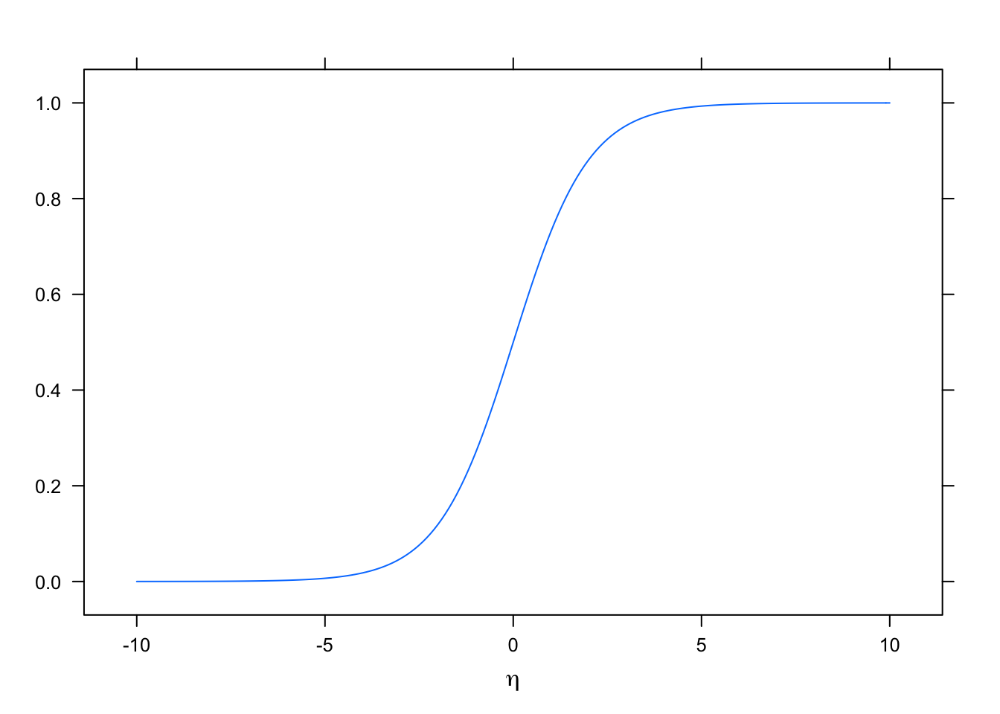
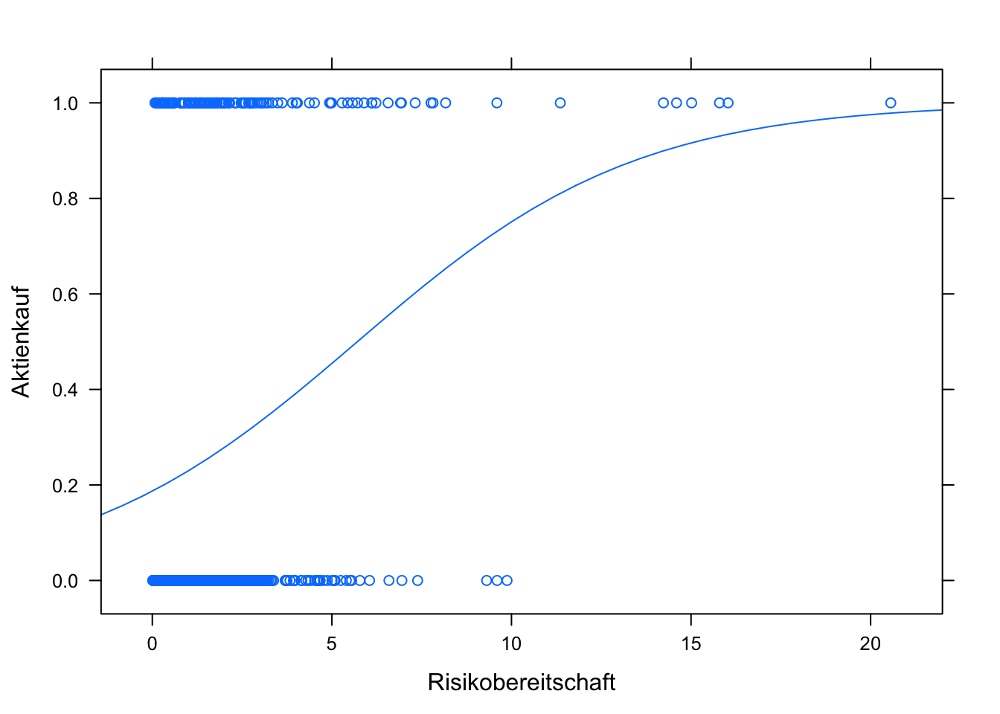

Kapitel 12 Klassifizierende Regression
Lernziele:
- Die Idee der logistischen Regression verstehen.
- Die Koeffizienten der logistischen Regression interpretieren können.
- Vertiefungen wie Modellgüte kennen.
12.1 Vorbereitung
Hier werden wir den Datensatz Aktienkauf der Universität Zürich (Universität Zürich, Methodenberatung) analysieren. Es handelt es sich hierbei um eine Befragung einer Bank im Zusammenhang mit den Fakten, die mit der Wahrscheinlichkeit, dass jemand Aktien erwirbt, zusammenhängen. Es wurden 700 Personen befragt. Folgende Daten wurden erhoben: Aktienkauf (0 = nein, 1 = ja), Jahreseinkommen (in Tausend CHF), Risikobereitschaft (Skala von 0 bis 25) und Interesse an der aktuellen Marktlage (Skala von 0 bis 45).
Den Datensatz können Sie in so als csv-Datei herunterladen:
Aktien <- read.csv2("https://raw.githubusercontent.com/luebby/Datenanalyse-mit-R/master/Daten/Aktienkauf.csv")Zur Unterstützung der Analyse wird (wieder) mosaic und ggplot2 verwendet.
library(mosaic)
library(ggplot2)12.2 Problemstellung
Können wir anhand der Risikobereitschaft abschätzen, ob die Wahrscheinlichkeit für einen Aktienkauf steigt? Schauen wir uns zunächst ein Streudiagramm an:
xyplot(Aktienkauf ~ Risikobereitschaft, data = Aktien)
Der Zusammenhang scheint nicht sehr ausgeprägt zu sein. Lassen Sie uns dennoch ein lineare Regression durchführen und das Ergebnis auswerten und graphisch darstellen.
lm1 <- lm(Aktienkauf ~ Risikobereitschaft, data = Aktien)
summary(lm1)
#>
#> Call:
#> lm(formula = Aktienkauf ~ Risikobereitschaft, data = Aktien)
#>
#> Residuals:
#> Min 1Q Median 3Q Max
#> -0.684 -0.243 -0.204 0.348 0.814
#>
#> Coefficients:
#> Estimate Std. Error t value Pr(>|t|)
#> (Intercept) 0.18246 0.02001 9.12 < 2e-16 ***
#> Risikobereitschaft 0.05083 0.00762 6.67 5.2e-11 ***
#> ---
#> Signif. codes: 0 '***' 0.001 '**' 0.01 '*' 0.05 '.' 0.1 ' ' 1
#>
#> Residual standard error: 0.427 on 698 degrees of freedom
#> Multiple R-squared: 0.0599, Adjusted R-squared: 0.0586
#> F-statistic: 44.5 on 1 and 698 DF, p-value: 5.25e-11
plotModel(lm1)
Der Schätzer für die Steigung für Risikobereitschaft ist signifikant. Das Bestimmtheitsmaß \(R^2\) ist allerdings sehr niedrig, aber wir haben bisher ja auch nur eine unabhängige Variable für die Erklärung der abhängigen Variable herangezogen.
Doch was bedeutet es, dass die Wahrscheinlichkeit ab einer Risikobereitsschaft von ca. 16 über 1 liegt?
Wahrscheinlichkeiten müssen zwischen 0 und 1 liegen. Daher brauchen wir eine Funktion, die das Ergebnis einer linearen Regression in einen Bereich von 0 bis 1 bringt, die sogenannte Linkfunktion. Eine häufig dafür verwendete Funktion ist die logistische Funktion: \[p(y=1)=\frac{e^\eta}{1+e^\eta}=\frac{1}{1+e^{-\eta}}\]
\(\eta\), das sogenannte Logit, ist darin die Linearkombination der Einflussgrößen: \[\eta=\beta_0+\beta_1\cdot x_1+\dots\]
Exemplarisch können wir die logistische Funktion für einen Bereich von \(\eta=-10\) bis \(+10\) darstellen (vgl. 12.1). Der Graph der logistischen Funktion ähnelt einem langgestreckten S (“Ogive” genannt).

Abbildung 12.1: Die logistische Regression beschreibt eine ‘s-förmige’ Kurve
12.3 Die Idee der logistischen Regression
Die logistische Regression ist eine Anwendung des allgemeinen linearen Modells (general linear model, GLM). Die Modellgleichung lautet: \[p(y_i=1)=L\bigl(\beta_0+\beta_1\cdot x_{i1}+\dots+\beta_K\cdot x_{ik}\bigr)+\epsilon_i\]
\(L\) ist die Linkfunktion, in unserer Anwendung die logistische Funktion.
\(x_{ik}\) sind die beobachten Werte der unabhängigen Variablen \(X_k\).
\(k\) sind die unabhängigen Variablen \(1\) bis \(K\).
Die Funktion glm führt die logistische Regression durch. Wir schauen uns im Anschluss zunächst den Plot an.
glm1 <- glm(Aktienkauf ~ Risikobereitschaft, family = binomial("logit"),
data = Aktien)
plotModel(glm1)
Es werden ein Streudiagramm der beobachten Werte sowie die Regressionslinie ausgegeben. Wir können so z. B. ablesen, dass ab einer Risikobereitschaft von etwa 7 die Wahrscheinlichkeit für einen Aktienkauf nach unserem Modell bei mehr als 50 % liegt.
Die Zusammenfassung des Modells zeigt folgendes:
summary(glm1)
#>
#> Call:
#> glm(formula = Aktienkauf ~ Risikobereitschaft, family = binomial("logit"),
#> data = Aktien)
#>
#> Deviance Residuals:
#> Min 1Q Median 3Q Max
#> -1.653 -0.738 -0.677 0.825 1.823
#>
#> Coefficients:
#> Estimate Std. Error z value Pr(>|z|)
#> (Intercept) -1.4689 0.1184 -12.4 < 2e-16 ***
#> Risikobereitschaft 0.2573 0.0468 5.5 3.8e-08 ***
#> ---
#> Signif. codes: 0 '***' 0.001 '**' 0.01 '*' 0.05 '.' 0.1 ' ' 1
#>
#> (Dispersion parameter for binomial family taken to be 1)
#>
#> Null deviance: 804.36 on 699 degrees of freedom
#> Residual deviance: 765.86 on 698 degrees of freedom
#> AIC: 769.9
#>
#> Number of Fisher Scoring iterations: 4Der Achsenabschnitt (intercept) des logits \(\eta\) wird mit -1.47 geschätzt, die Steigung in Richtung Risikobereitschaft mit 0.26. Die (Punkt-)Prognose für die Wahrscheinlickeit eines Aktienkaufs \(p(y=1)\) benötigt anders als in der linearen Regression noch die Linkfunktion und ergibt sich somit zu: \[p(\texttt{Aktienkauf}=1)=\frac{1}{1+e^{-(-1.47 + 0.26 \cdot \texttt{Risikobereitschaft})}}\]
Die p-Werte der Koeffizienten können in der Spalte Pr(>|z|) abgelesen werden. Hier wird ein Wald-Test durchgeführt, nicht wie bei der linearen Regression ein t-Test, ebenfalls mit der \(H_0:\beta_i=0\). Die Teststastistik (z value) wird wie in der linearen Regression durch Divisions des Schätzers (Estimate) durch den Standardfehler (Std. Error) ermittelt. Im Wald-Test ist die Teststatistik allerdings \(\chi^2\)-verteilt mit einem Freiheitsgrad.
12.4 Welche Unterschiede zur linearen Regression gibt es in der Ausgabe?
Es gibt kein \(R^2\) im Sinne einer erklärten Streuung der \(y\)-Werte, da die beobachteten \(y\)-Werte nur \(0\) oder \(1\) annehmen können. Das Gütemaß bei der logistischen Regression ist das Akaike Information Criterion (AIC). Hier gilt allerdings: je kleiner, desto besser. (Anmerkung: es kann ein Pseudo-\(R^2\) berechnet werden – kommt später.)
Es gibt keine F-Statistik (oder ANOVA) mit der Frage, ob das Modell als Ganzes signifikant ist. (Anmerkung: es kann aber ein vergleichbarer Test durchgeführt werden – kommt später.)
12.5 Interpretation der Koeffizienten
12.5.1 y-Achsenabschnitt (Intercept) \(\beta_0\)
Für \(\beta_0>0\) gilt, dass selbst wenn alle anderen unabhängigen Variablen \(0\) sind, es eine Wahrscheinlichkeit von mehr als 50% gibt, dass das modellierte Ereignis eintritt. Für \(\beta_0<0\) gilt entsprechend das Umgekehrte.
12.5.2 Steigung \(\beta_i\) mit \(i=1,2,...,K\)
Für \(\beta_i>0\) gilt, dass mit zunehmenden \(x_i\) die Wahrscheinlichkeit für das modellierte Ereignis steigt. Bei \(\beta_i<0\) nimmt die Wahrscheinlichkeit entsprechend ab.
Eine Abschätzung der Änderung der Wahrscheinlichkeit (relatives Risiko, relative risk \(RR\)) kann über das Chancenverhältnis (Odds Ratio \(OR\)) gemacht werden.57 Es ergibt sich vereinfacht \(e^{\beta_i}\). Die Wahrscheinlichkeit ändert sich näherungsweise um diesen Faktor, wenn sich \(x_i\) um eine Einheit erhöht. Hinweis: \(RR\approx OR\) gilt nur, wenn der Anteil des modellierten Ereignisses in den beobachteten Daten sehr klein (\(<5\%\)) oder sehr groß ist (\(>95\%\)).
Übung: Berechnen Sie das relative Risiko für unser Beispielmodell, wenn sich die Risikobereitschaft um 1 erhöht (Funktion exp()). Vergleichen Sie das Ergebnis mit der Punktprognose für Risikobereitschaft\(=7\) im Vergleich zu Risikobereitschaft\(=8\). Zur Erinnerung: Sie können makeFun(model) verwenden.
# aus Koeffizient abgeschätzt
exp(coef(glm1)[2])
#> Risikobereitschaft
#> 1.29In Worten: “Mit jedem Punkt mehr Risikobereitschaft steigen die Chancen (das OR) für Aktienkauf um 1.293”.
# mit dem vollständigen Modell berechnet
fun1 <- makeFun(glm1)
fun1(Risikobereitschaft = 1)
#> 1
#> 0.229
fun1(Risikobereitschaft = 8)
#> 1
#> 0.643
# als Faktor ausgeben
fun1(Risikobereitschaft = 8)/fun1(Risikobereitschaft = 1)
#> 1
#> 2.8Bei einer Risikobereitschaft von 1 beträgt die Wahrscheinlichkeit für \(y=1\), d.h. für das Ereignis “Aktienkauf”, 0.23. Bei einer Risikobereitschaft von 8 liegt diese Wahrscheinlichkeit bei 0.64.
Sie sehen also, die ungefähr abgeschätzte Änderung der Wahrscheinlichkeit weicht hier doch deutlich von der genau berechneten Änderung ab. Der Anteil der Datensätze mit Risikobereitschaft\(=1\) liegt allerdings auch bei 0.26.
12.6 Kategoriale Variablen
Wie schon in der linearen Regression können auch in der logistschen Regression kategoriale Variablen als unabhängige Variablen genutzt werden. Als Beispiel nehmen wir den Datensatz tips und versuchen abzuschätzen, ob sich die Wahrscheinlichkeit dafür, dass ein Raucher bezahlt hat (smoker == yes), in Abhängigkeit vom Wochentag ändert.
Sofern noch nicht geschehen, können Sie so als csv-Datei herunterladen:
tips <- read.csv("https://sebastiansauer.github.io/data/tips.csv")Zunächst ein Plot:
xyplot(jitter(as.numeric(smoker)) ~ day, data = tips)
Hinweis: Um zu sehen, ob es an manchen Tagen mehr Raucher gibt, sollten Sie zumindest eine Variable “verrauschen” (“jittern”). Da die Variable smoker eine nominale Variable ist und die Funktion jitter() nur mit numerischen Variablen arbeitet, muss sie mit as.numeric() in eine numerische Variable umgewandelt werden.
Die relativen Häufigkeiten zeigt folgende Tabelle:
(tab_smoke <- tally(smoker ~ day, data = tips, format = "proportion"))
#> day
#> smoker Fri Sat Sun Thur
#> No 0.211 0.517 0.750 0.726
#> Yes 0.789 0.483 0.250 0.274Hinweis: Durch die Klammerung wird das Objekt tab_smoke direkt ausgegeben.
Probieren wir die logistische Regression aus:
glmtips <- glm(smoker ~ day, family = binomial("logit"),data = tips)
summary(glmtips)
#>
#> Call:
#> glm(formula = smoker ~ day, family = binomial("logit"), data = tips)
#>
#> Deviance Residuals:
#> Min 1Q Median 3Q Max
#> -1.765 -0.801 -0.758 1.207 1.665
#>
#> Coefficients:
#> Estimate Std. Error z value Pr(>|z|)
#> (Intercept) 1.322 0.563 2.35 0.01883 *
#> daySat -1.391 0.602 -2.31 0.02093 *
#> daySun -2.420 0.622 -3.89 1e-04 ***
#> dayThur -2.295 0.631 -3.64 0.00027 ***
#> ---
#> Signif. codes: 0 '***' 0.001 '**' 0.01 '*' 0.05 '.' 0.1 ' ' 1
#>
#> (Dispersion parameter for binomial family taken to be 1)
#>
#> Null deviance: 324.34 on 243 degrees of freedom
#> Residual deviance: 298.37 on 240 degrees of freedom
#> AIC: 306.4
#>
#> Number of Fisher Scoring iterations: 4Auch hier können wir die Koeffizienten in Relation zur Referenzkategorie (hier: Freitag) interpretieren. Die Wahrscheinlichkeit ist an einem Samstag niedriger, der Wert für daySat ist negativ. Eine Abschätzung erhalten wir wieder mit \(e^{\beta_i}\):
exp(coef(glmtips)[2])
#> daySat
#> 0.249Daher ist das Chancenverhältnis (Odds Ratio), dass am Samstag ein Raucher am Tisch sitzt, näherungsweise um den Faktor 0.25 niedriger als am Freitag58:
\[{OR=\frac{\frac{P(Raucher|Samstag)}{1-P(Raucher|Samstag)}} {\frac{P(Raucher|Freitag)}{1-P(Raucher|Freitag)}} =\frac{\frac{0.483}{0.517}} {\frac{0.79}{0.21}} \approx 0.249}\]
Die Wahrscheinlichkeit für einen Raucher am Samstag können wir uns wieder komfortabel so ausgeben lassen:
fun2 <- makeFun(glmtips)
fun2(day = "Sat")
#> 1
#> 0.48312.7 Multiple logistische Regression
Wir kehren wieder zurück zu dem Datensatz Aktienkauf. Können wir unser Model glm1 mit nur einer erklärenden Variable verbessern, indem weitere unabhängige Variablen hinzugefügt werden?
glm2 <- glm(Aktienkauf ~ Risikobereitschaft + Einkommen + Interesse,
family = binomial("logit"), data = Aktien)
plotModel(glm2)
summary(glm2)
#>
#> Call:
#> glm(formula = Aktienkauf ~ Risikobereitschaft + Einkommen + Interesse,
#> family = binomial("logit"), data = Aktien)
#>
#> Deviance Residuals:
#> Min 1Q Median 3Q Max
#> -2.130 -0.715 -0.539 0.518 3.214
#>
#> Coefficients:
#> Estimate Std. Error z value Pr(>|z|)
#> (Intercept) -1.66791 0.27903 -5.98 2.3e-09 ***
#> Risikobereitschaft 0.34781 0.08822 3.94 8.1e-05 ***
#> Einkommen -0.02157 0.00564 -3.83 0.00013 ***
#> Interesse 0.08520 0.01775 4.80 1.6e-06 ***
#> ---
#> Signif. codes: 0 '***' 0.001 '**' 0.01 '*' 0.05 '.' 0.1 ' ' 1
#>
#> (Dispersion parameter for binomial family taken to be 1)
#>
#> Null deviance: 804.36 on 699 degrees of freedom
#> Residual deviance: 679.01 on 696 degrees of freedom
#> AIC: 687
#>
#> Number of Fisher Scoring iterations: 5
Alle Schätzer sind signifkant zum 0.1 %-Niveau (*** in der Ausgabe). Zunehmende Risikobereitschaft (der Einfluss ist im Vergleich zum einfachen Modell stärker geworden) und zunehmendes Interesse erhöhen die Wahrscheinlichkeit für einen Aktienkauf. Steigendes Einkommen hingegen senkt die Wahrscheinlichkeit.
Ist das Modell besser als das einfache? Ja, da der AIC-Wert von 769.86 auf 687.01 gesunken ist.
Die Graphik zeigt die Verläufe in Abhängigkeit von den verschiedenen Variablen und den Kombinationen der Variablen.
12.8 Modell- bzw. Klassifikationsgüte
Logistische Regressionsmodelle werden häufig zur Klassifikation verwendet, z. B. ob der Kredit für einen Neukunden ein “guter” Kredit ist oder nicht. Daher sind die Klassifikationseigenschaften bei logistischen Modellen wichtige Kriterien.
Hierzu werden die aus dem Modell ermittelten Wahrscheinlichkeiten ab einem Schwellenwert (cutpoint), häufig \(0.5\), einer geschätzten \(1\) zugeordnet, unterhalb des Schwellenwertes einer \(0\). Diese aus dem Modell ermittelten Häufigkeiten werden dann in einer sogenannten Konfusionsmatrix (confusion matrix) mit den beobachteten Häufigkeiten verglichen.
Daher sind wichtige Kriterien eines Modells, wie gut diese Zuordnung erfolgt. Dazu werden die Sensitivität (True Positive Rate, TPR), also der Anteil der mit \(1\) geschätzten an allen mit \(1\) beobachten Werten, und die Spezifität (True Negative Rate) berechnet. Ziel ist es, dass beide Werte möglichst hoch sind.
Sie können die Konfusionsmatrix “zu Fuß” berechnen, in dem Sie eine neue Variable einfügen, die ab dem cutpoint \(1\) und sonst \(0\) ist und mit dem Befehl tally() ausgeben. Alternativ können Sie das Paket SDMTools verwenden mit der Funktion confusion.matrix(). Ein Parameter ist cutpoint, der standardmäßig auf \(0.5\) steht.
# Konfusionsmatrix "zu Fuß" berechnen
# cutpoint = 0.5 setzen
# neue Variable predicted anlegen mit 1, wenn modellierte Wahrscheinlichkeit > 1 ist
cutpoint = 0.5
Aktien$predicted <- ((glm1$fitted.values) > cutpoint)*1
# Kreuztabelle berechnen
(cm <- tally(~predicted+Aktienkauf, data = Aktien))
#> Aktienkauf
#> predicted 0 1
#> 0 509 163
#> 1 8 20
# Sensitivität (TPR)
cm[2,2]/sum(cm[,2])
#> [1] 0.109
# Spezifität (TNR)
cm[1,1]/sum(cm[,1])
#> [1] 0.985
# mit Hilfe des Pakets SDMTools
# ggf. install.packages("SDMTools")
library(SDMTools)
# optional noch Parameter cutpoint = 0.5 angeben
(cm <- confusion.matrix(Aktien$Aktienkauf, glm1$fitted.values))
#> obs
#> pred 0 1
#> 0 509 163
#> 1 8 20
#> attr(,"class")
#> [1] "confusion.matrix"
sensitivity(cm)
#> [1] 0.109
specificity(cm)
#> [1] 0.985Wenn die Anteile der \(1\) in den beobachteten Daten sehr gering sind (z. B. bei einem medizinischem Test auf eine seltene Krankheit, Klicks auf einen Werbebanner oder Kreditausfall), kommt eine Schwäche der logistischen Regression zum Tragen: Das Modell wird so optimiert, dass die Wahrscheinlichkeiten \(p(y=1)\) alle unter \(0.5\) liegen. Das würde zu einer Sensitität von \(0\) und einer Spezifiät von \(1\) führen. Daher kann es sinnvoll sein, den Cutpoint zu varieren. Daraus ergibt sich ein verallgemeinertes Gütemaß, die ROC-Kurve (Return Operating Characteristic) und den daraus abgeleiteten AUC-Wert (Area Under Curve).
Hierzu wird der Cutpoint zwischen 0 und 1 variiert und die Sensitivität gegen \(1-\)Spezifität (welche Werte sind als \(1\) modelliert worden unter den beobachten \(0\), False Positive Rate, FPR). Um diese Werte auszugeben, benötigen Sie das Paket ROCR und die Funktion performance().
# ggf. install.packages("ROCR")
library(ROCR)
# Ein für die Auswertung notwendiges prediction Objekt anlegen
pred <- prediction(glm1$fitted.values, Aktien$Aktienkauf)
# ROC Kurve
perf <- performance(pred,"tpr","fpr")
plot(perf)
abline(0,1, col = "grey")
# Area under curve (ROC-Wert)
performance(pred,"auc")@y.values
#> [[1]]
#> [1] 0.636
AUC liegt zwischen \(0.5\), wenn das Modell gar nichts erklärt (im Plot die graue Linie) und \(1\). Hier ist der Wert also recht gering. Akzeptable Werte liegen bei \(0.7\) und größer, gute Werte sind es ab \(0.8\).59
12.9 Vertiefung
12.9.1 Modellschätzung
Das Modell wird nicht wie bei der lineare Regression über die Methode der kleinsten Quadrate (OLS) geschätzt, sondern über die Maximum Likelihood Methode. Die Koeffizienten werden so gewählt, dass die beobachteten Daten am wahrscheinlichsten (Maximum Likelihood) werden.
Das ist ein iteratives Verfahren (OLS erfolgt rein analytisch), daher wird in der letzten Zeile der Ausgabe auch die Anzahl der Iterationen (Fisher Scoring Iterations) ausgegeben.
Die Devianz des Modells (Residual deviance) ist \(-2\) mal die logarithmierte Likelihood. Die Nulldevianz (Null deviance) ist die Devianz eines Nullmodells, d. h., alle \(\beta\) außer der Konstanten sind 0.
12.9.2 Likelihood Quotienten Test
Der Likelihood Quotienten Test (Likelihood Ratio Test, LR-Test) vergleicht die Likelihood \(L_0\) des Nullmodels mit der Likelihood \(L_{\beta}\) des geschätzten Modells. Die Prüfgröße des LR-Tests ergibt sich aus: \[{T=-2\cdot ln\left( \frac{L_0}{L_{\beta}}\right)}\] \(T\) ist näherungsweise \(\chi ^2\)-verteilt mit \(k\) Freiheitsgraden.
In R können Sie den Test mit lrtest() aufrufen. Sie benötigen dazu das Paket lmtest.
library(lmtest)
lrtest(glm2)
#> Likelihood ratio test
#>
#> Model 1: Aktienkauf ~ Risikobereitschaft + Einkommen + Interesse
#> Model 2: Aktienkauf ~ 1
#> #Df LogLik Df Chisq Pr(>Chisq)
#> 1 4 -340
#> 2 1 -402 -3 125 <2e-16 ***
#> ---
#> Signif. codes: 0 '***' 0.001 '**' 0.01 '*' 0.05 '.' 0.1 ' ' 1Das Modell glm2 ist als Ganzes signifikant, der p-Wert ist sehr klein.
Den Likelihood Quotienten Test können Sie auch verwenden, um zwei Modelle miteinander zu vergleichen, z. B., wenn Sie eine weitere Variable hinzugenommen haben und wissen wollen, ob die Verbesserung auch signifikant war.
lrtest(glm1, glm2)
#> Likelihood ratio test
#>
#> Model 1: Aktienkauf ~ Risikobereitschaft
#> Model 2: Aktienkauf ~ Risikobereitschaft + Einkommen + Interesse
#> #Df LogLik Df Chisq Pr(>Chisq)
#> 1 2 -383
#> 2 4 -340 2 86.9 <2e-16 ***
#> ---
#> Signif. codes: 0 '***' 0.001 '**' 0.01 '*' 0.05 '.' 0.1 ' ' 1Ja, die Modelle glm1 (mit einer erklärenden Variable) und glm2 unterscheiden sich signifikant voneinander.
12.9.3 Pseudo-\(R^2\)
Verschiedene Statistiker haben versucht, aus der Likelihood eine Größe abzuleiten, die dem \(R^2\) der linearen Regression entspricht. Exemplarisch sei hier McFaddens \(R^2\) gezeigt: \[{R^2=1-\frac{ln(L_{\beta})}{ln(L_0)}}\] Wie bei bei dem \(R^2\) der linearen Regression liegt der Wertebereich zwischen 0 und 1. Ab einem Wert von 0,4 kann die Modellanpassung als gut eingestuft werden. Wo liegen \(R^2\) der beiden Modelle glm1 und glm2? Sie können es direkt berechnen oder das Paket BaylorEdPsych verwenden.
# direkte Berechnung
1 - glm1$deviance/glm1$null.deviance
#> [1] 0.0479
1 - glm2$deviance/glm2$null.deviance
#> [1] 0.156
# ggf. install.packages("BaylorEdPsych")
library(BaylorEdPsych)
PseudoR2(glm1)
#> McFadden Adj.McFadden Cox.Snell Nagelkerke
#> 0.0479 0.0404 0.0535 0.0783
#> McKelvey.Zavoina Effron Count Adj.Count
#> 0.0826 0.0584 0.7557 0.0656
#> AIC Corrected.AIC
#> 769.8624 769.8796
PseudoR2(glm2)
#> McFadden Adj.McFadden Cox.Snell Nagelkerke
#> 0.1558 0.1434 0.1640 0.2400
#> McKelvey.Zavoina Effron Count Adj.Count
#> 0.2828 0.1845 0.7614 0.0874
#> AIC Corrected.AIC
#> 687.0068 687.0644Insgesamt ist die Modellanpassung, auch mit allen Variablen, als schlecht zu bezeichnen. Hinweis: Die Funktion PseudoR2(model) zeigt verschiedene Pseudo-\(R^2\) Statistiken, die jeweils unter bestimmten Bedingungen vorteilhaft einzusetzen sind. Für weitere Erläuterungen sei auf die Literatur verwiesen.
12.10 Übung: Rot- oder Weißwein?
Der Datensatz untersucht den Zusammenhang zwischen der Qualität und physiochemischen Eigenschaften von portugisieschen Rot- und Weißweinen (Cortez u. a. 2009).
Sie können in unter https://goo.gl/Dkd7nK herunterladen. Die Originaldaten finden Sie im UCI Machine Learning Repository60.
Versuchen Sie anhand geeigneter Variablen, Rot- und Weißweine (richtig) zu klassifizieren61.
Zusatzaufgabe: Die Originaldaten bestehen aus einem Datensatz für Weißweine und einem für Rotweine. Laden Sie diese, beachten Sie die Fehlermeldung und beheben die damit verbundenen Fehler und fassen beide Datensätze zu einem gemeinsamen Datensatz zusammen, in dem eine zusätzliche Variable color aufgenommen wird (Rot = 0, Weiß = 1).
12.11 Literatur
- David M. Diez, Christopher D. Barr, Mine Çetinkaya-Rundel (2014): Introductory Statistics with Randomization and Simulation, https://www.openintro.org/stat/textbook.php?stat_book=isrs, Kapitel 6.4
- Nicholas J. Horton, Randall Pruim, Daniel T. Kaplan (2015): Project MOSAIC Little Books A Student’s Guide to R, https://github.com/ProjectMOSAIC/LittleBooks/raw/master/StudentGuide/MOSAIC-StudentGuide.pdf, Kapitel 8
- Gareth James, Daniela Witten, Trevor Hastie, Robert Tibshirani (2013): An Introduction to Statistical Learning – with Applications in R, http://www-bcf.usc.edu/~gareth/ISL/, Kapitel 4.1-4.3
- Maike Luhmann (2015): R für Einsteiger, Kapitel 17.5
- Daniel Wollschläger (2014): Grundlagen der Datenanalyse mit R, Kapitel 8.1
Literaturverzeichnis
Cortez, Paulo, António Cerdeira, Fernando Almeida, Telmo Matos, und José Reis. 2009. „Modeling wine preferences by data mining from physicochemical properties“. Decision Support Systems 47 (4). Elsevier: 547–53.
Wahrscheinlichkeit vs. Chance: Die Wahrscheinlichkeit bei einem fairen Würfel, eine 6 zu würfeln, ist \(1/6\). Die Chance (Odd), eine 6 zu würfeln, ist die Wahrscheinlichkeit dividiert durch die Gegenwahrscheinlichkeit, also \(\frac{1/6}{5/6}=1/5\).↩
Am Freitag liegen die Chancen (das OR) für einen Raucher bei 3.75. Das OR für Samstag ist das Produkt dieser beiden OR. Um das OR zu einer Wahrscheinlichkeit umzurechnen kann man, möchte vom “von Hand” arbeiten, diese Formel verwenden: \(p = OR / (OR + 1)\).↩
Hosmer/Lemeshow, Applied Logistic Regression, 3rd Ed. (2013), S. 164↩
Anregungen zu dieser Übung stammen von INTW Statistics: https://www.inwt-statistics.de/blog-artikel-lesen/Logistische_Regression_Beispiel_mit_R.html↩